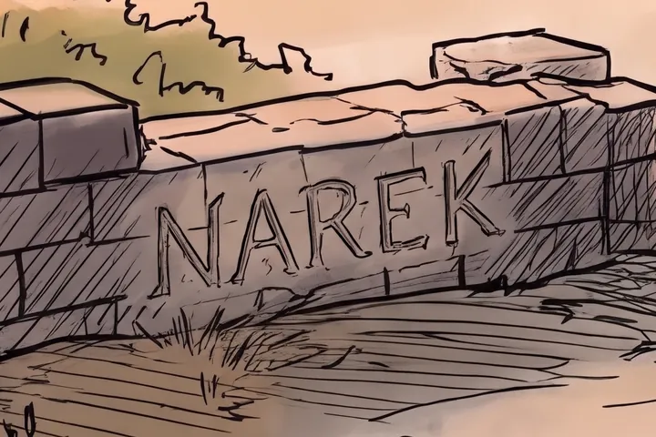
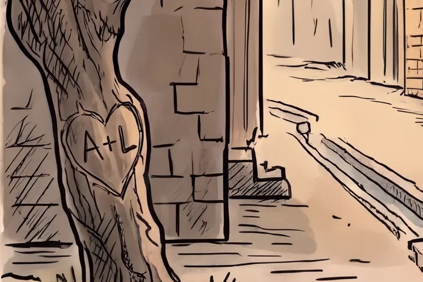
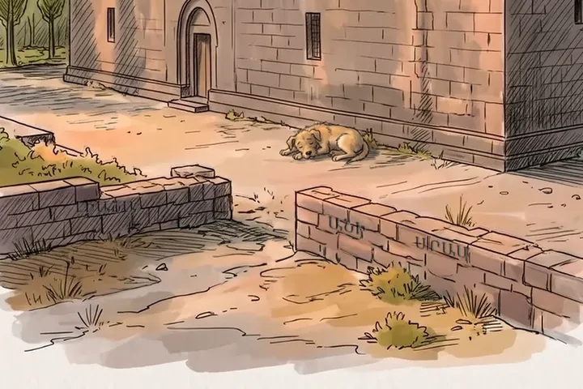

Քո անունը՝ հին Երևանի քարինТвоё имя — на камне старого ЕреванаYour name on a stone of old Yerevan
Քո անունը կփորագրվի կորած շենքի նկարի քարին՝ թանգարանում։Твоё имя будет вырезано на камне в рисунке утраченного здания — в музее.Your name will be carved into a stone in the drawing of a lost building, in the museum.
ՕրինակներПримерыExamples



ՏեղերМестаSpots
Մնացել է 8 տեղ՝ 8-իցОсталось 8 из 88 of 8 left
- 1
- 2
- 3
- 4
- 5
- 6
- 7
- 8
ազատсвободноfreeզբաղվածзанятоtaken
$15պատրաստ կլինի 1–2 օրումготово за 1–2 дняready in 1–2 days
Թանգարանը պատրաստում է Նարեկը՝ Երևանից։ Յուրաքանչյուր շենք վերականգնվում է հին լուսանկարներից։Музей делает Нарек из Еревана. Каждое здание восстановлено по старым фотографиям.The museum is made by Narek, in Yerevan. Every building is restored from old photographs.
Չհավանեցիք՝ անվճար նորից կանենք։Не понравится — переделаем бесплатно.Don't like it — we'll redo it for free.